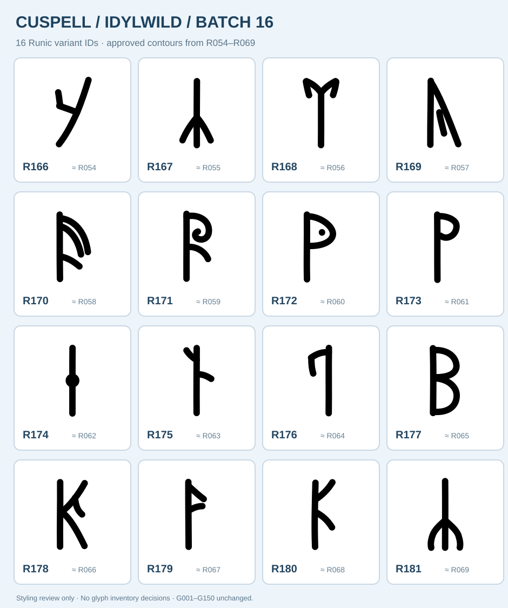
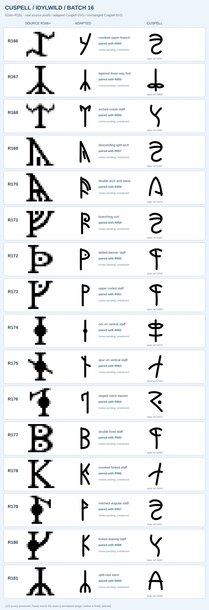
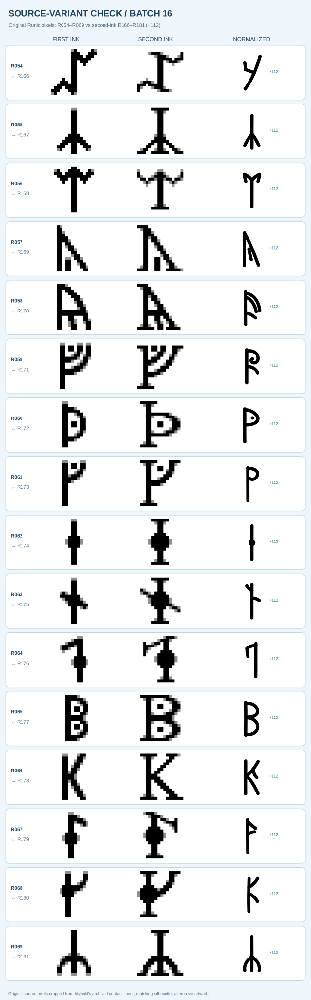

Editable SVGs share the approved R054–R069 contours, while original Idylwild PNG source variants remain linked. This is style approval only, not final selection.
Adapted overview

Original / Adapted / Existing Cuspell

Original first/second-ink source variants
